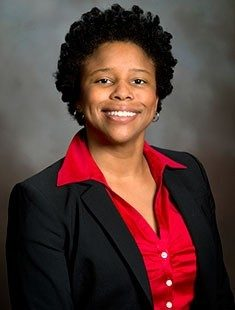

COMM 3014- PR Cases
Dr. Logan
Public Relations Cases is a class in which students analyze basic PR terms and theories through case studies. This class is particularly interesting because it defines these terms through real world examples. The class is structured so that we do not meet in person most days, but when we do have a lecture mixed with group discussions. This is beneficial as it allows each student to work at their own pace while providing a time for us all to catch up to a singular benchmark
Dr. Logan is an extremely qualified professor that is very passionate about the field of PR. She is especially knowledgable of case studies through her many years in the industry. She recieved her PhD, master's, and bachelor's from Georgia State Univerity, and has been in the industry for many years. She is a member and councilwoman of PRSA along with the NCAand has specific expertise in organizational and corporate communication in PR.IThis class has been a very nice break from my everyday meetings, as it allows me to complete my work in my own time. I will expect to get some form of a B in the class, and will carry the information learned throughout the rest of my studies.
